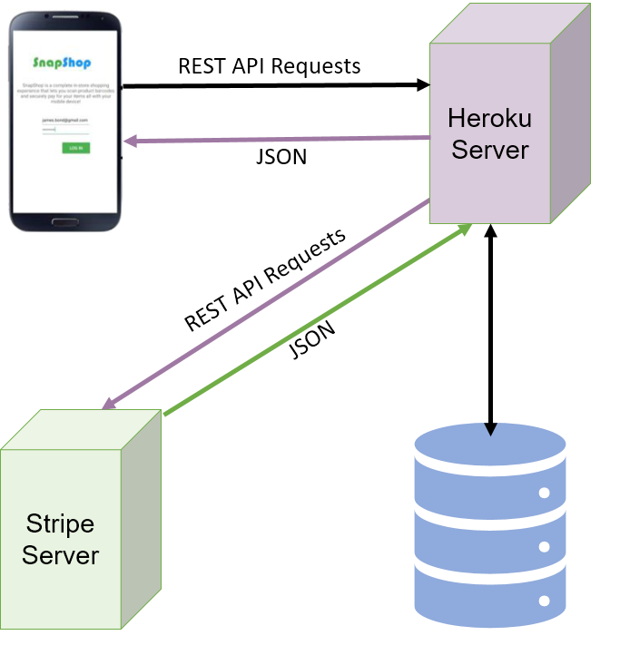
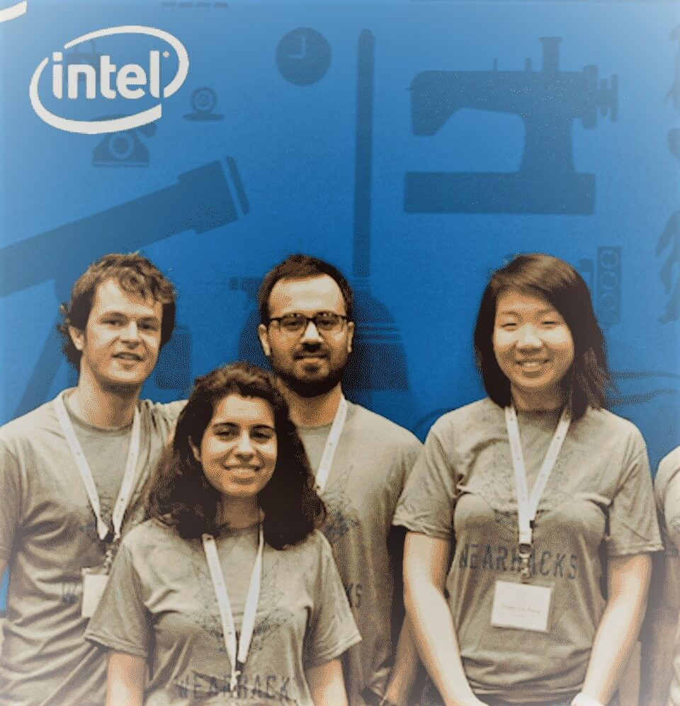

Projects
A collection of software, hardware, robotics, machine learning and AI projects.
2017
Software Architecture of a Smart Home Digital Twin ›
Software design representing a Digital Twin (virtual replication) of an IoT-based smart home system using a micro-services architecture consisting of a controller service interacting with a model and an entitlement service. Design in the Unified Modeling Language (UML) using Object-Oriented Design Patterns and implementation in Java. In ProgressPick-Place Operation with a KUKA KR210 Robot ›
Pick-and-place operation with a KUKA KR210 robotic manipulator in a ROS based simulator environment consisting of Gazebo and RViz. Implemented Inverse Kinematics to determine object target locations, achieving an overall error of less than 0.000006% in the calculated end-effector position trajectory via Forward Kinematics.Autonomous Search with a Martian Mobile Robot ›
Autonomous search and retrieval of samples of interest on a simulated Martian terrain using Python, OpenCV, and Unity engine. Perception and decision-making implemented using thresholding, warping, and a finite state machine. Over 92% of the environment mapped at an 80% fidelity with all samples located and collected.Neural Network for Predicting Ridesharing ›
A deep neural network in Jupyter Notebook to predict daily bike rental data. Implemented backpropagation to train network and tuned its hyperparameters to achieve a training/validation loss of 0.063/0.148.
Navigation and Control of a Mobile Robot
Robust control and autonomous navigation in a cluttered environment of a differential drive robot modeled as a hybrid system. Software implemented in MATLAB. Hardware implemented on a Beaglebone Black microcontroller.Object-oriented Design of a Knowledge Graph
Software design of a knowledge graph of semantic information for collection by automated agents. Design and implementation of object-oriented approaches in Java and UML.
2016
Face Recognition in Videos with OpenCV ›
Frontal-face recognition in videos with OpenCV and machine learning using Local Binary Patterns in Open-Source Computer Vision and Python.Full-stack Stock Trading App
Website via which users can query real prices and manage a stocks portfolio. Frontend in HTML, CSS, Jinja; backend in Flask using REST endpoints; database using SQL.Shortest Path Planing on Google Maps
A maps application implemented with advanced graph search algorithms in Java and front-end in Google Maps API.Geospatial Earthquake Data Visualization
A tool for Interactive visualization of real-time geospatial earthquake data on Google Maps using Unfolding API and Java.A Simple Text Editor with Modern Features
Spell-Checker and Auto-Complete among other features. Implementation using Trees and Tries (Data Structures) in Java.
2015

Mobile App for In-Store Shopping
An App that can scan product barcodes, and securely process and validate mobile payments using STRIPE and RESTful APIs.
Gesture-Controlled Manipulation of Objects in VR
Used OculusVR Rift and Thalmic Lab's Myo Armband to demonstrate a potential CPR training solution in virtual reality.